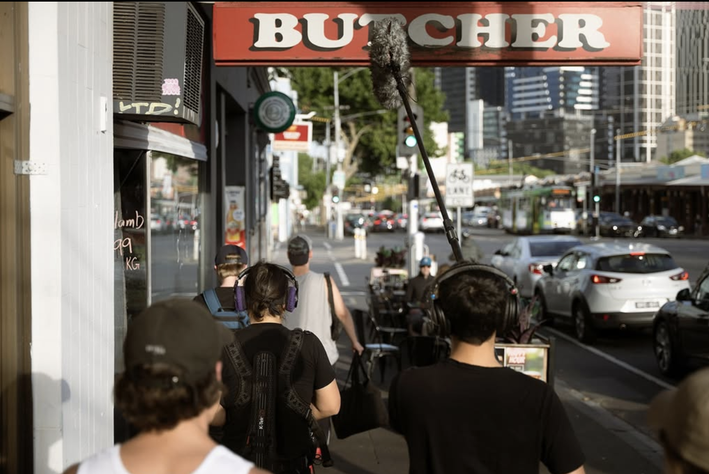
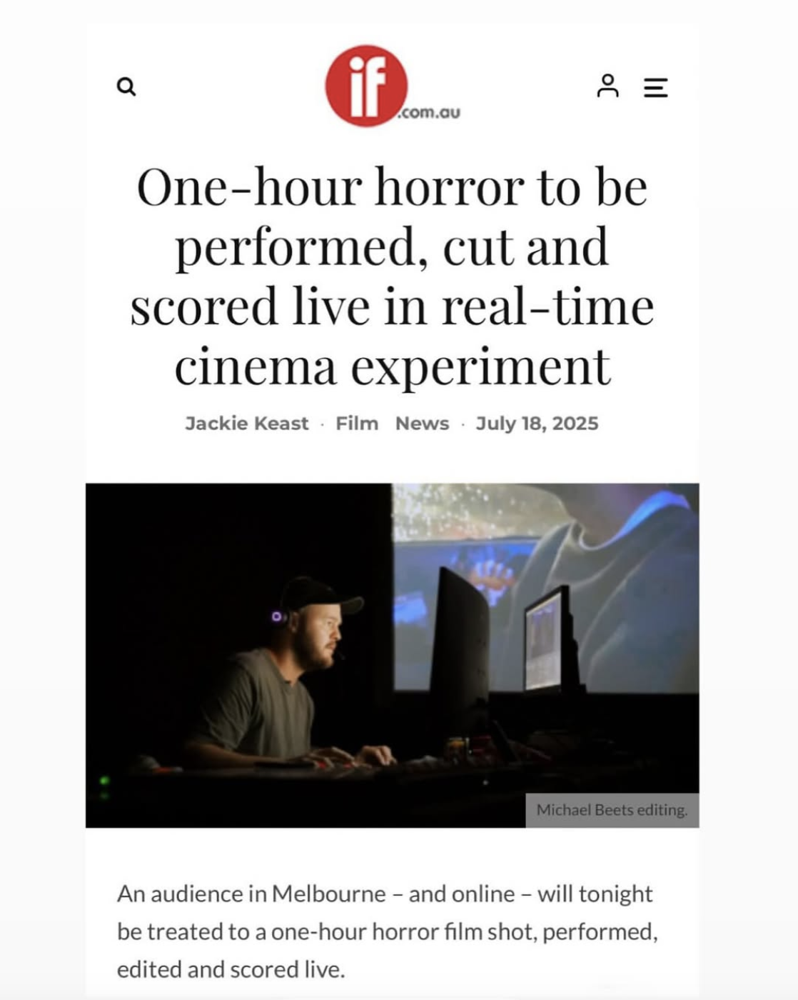
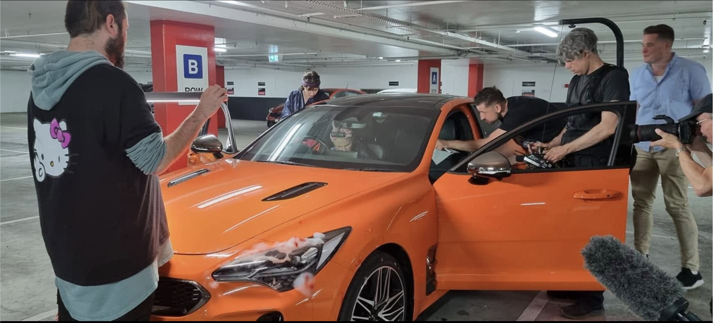
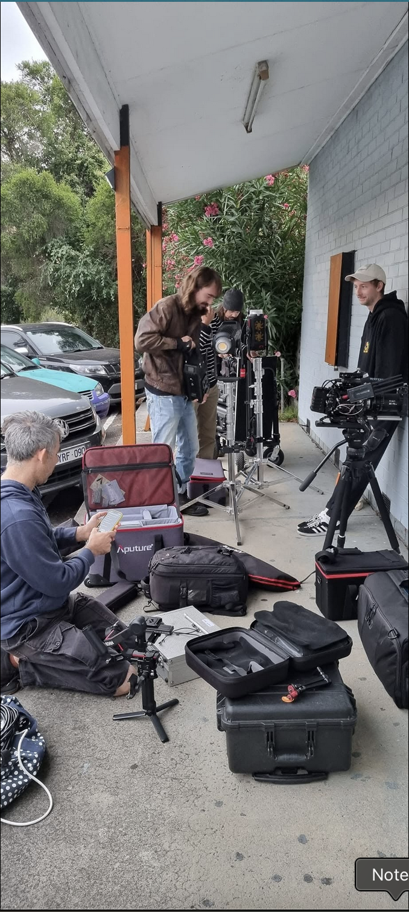
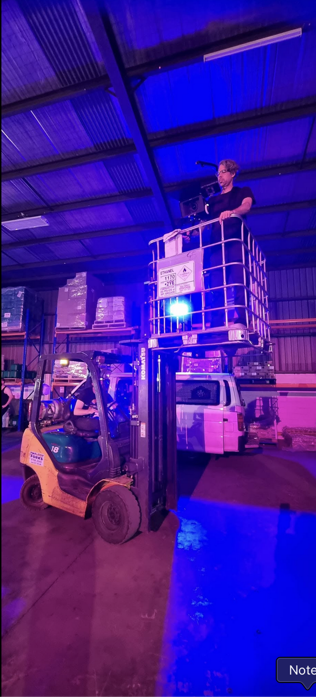
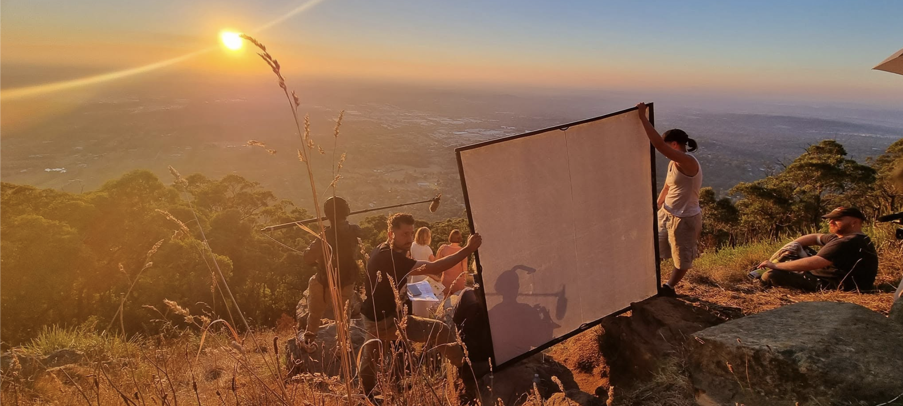

Editing • Videography • Writing
Tokyo based experimental editor interested in the bridge between technology, reality, and the past.
Slowlights of my trip to Naoshima and Kyoto
Video project series: "Making the everyday cinematic"
A selection of images and photographs from productions I've worked on.






Email: darcymilne97@gmail.com